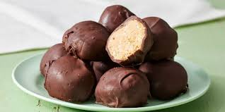

Peanut Butter Balls

Description
Peanut Butter Balls, also known as Buckeyes, are a classic no-bake dessert that are easy to make and always a hit
Ingredients
- Creamy peanut butter: 2.25 cups (390 g)
- Butter: 0.5 cup (115 g / 1 stick)
- Confectioners' sugar: 4 cups (400 g)
- Crisp rice cereal: 3 cups (525 g)
- Semisweet chocolate chips: 2 cups
Steps
- Gather all ingredients.
- Melt peanut butter and butter in a saucepan over low heat, stirring often.
- Mix crisp rice cereal and confectioners' sugar in a large bowl until well combined. Pour the melted peanut butter mixture over the top and stir until thoroughly blended; the mixture will still appear crumbly but will easily form into balls.
- Form the mixture into 1-inch diameter balls and place them onto parchment-lined cookie sheets. Cover with plastic wrap and refrigerate until firm, 3 hours to overnight.
- When ready to coat the balls, melt chocolate chips in a double boiler or microwave-safe bowl. Keep over the lowest heat to keep melted.
- Place a peanut butter ball into the melted chocolate. Use two forks to roll it around until fully coated. Carefully remove it, letting any excess chocolate drip back into the pot, and place it on a wire rack set over a piece of parchment paper. Repeat to coat remaining balls.
- Refrigerate coated peanut butter balls until completely firm before serving.